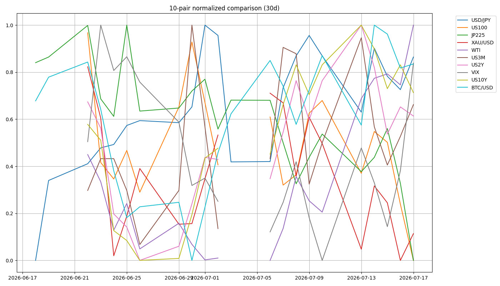

📉 CFD戦略ブリーフ — 7/20週
対象週: 2026-7-17_wk03（データ期間 2026-07-13→07-17 / snapshot 2026-07-18） ｜ ソース: review・meta・snapshot・boss(wr-2026-7-17)・--trade --news ｜ CFD正本: wk02→1.5Lot持越し / $3950ネック
Regime: Equities Down（Neutral→再悪化）
Add risk gate: 閉鎖（VIX 18.77>18）
Reduce: caution（VIX20/WTI83.82/介入/追証）
セリクラ待ち ｜ Gold 1.5Lot=wk02持越し継続 ｜ USDJPY触らない ｜ 7/20日本休場
1. パネル 30日スナップショット
| 銘柄 | 最新 | 30日% | wk02→wk03 |
|---|
| US100 | 28,592.7 | -5.96% | -4.13% |
| JP225 | 64,141.1 | -9.73% | -6.44% |
| USD/JPY | 162.353 | +1.09% | +0.681（upper_alert） |
| US10Y | 4.541 | +2.02% | boss 4.551% (-0.018d) |
| XAU/USD | 4,012.7 | -5.00% | -2.23%（3950ネック） |
| BTC/USD | 63,899.5 | +1.59% | -0.36% |
| WTI | 82.490 | +7.69% | +15.52% |
| VIX | 18.770 | +14.45% | +3.74（gate閉） |
curve: 5s10s +26.8bp bear_steepening ／ 3m10s +83.4bp positive ／ belly_elevated ／ intervention=watch + upper_alert
8ペア30日 正規化プロット

2. レジーム & ゲート
機械レジーム
Equities Down
equities=down / vol=normal / oil=range / gold=off / crypto=range / yields=rising
wk02 Neutral から再悪化
Add risk ゲート
閉鎖
VIX 18.77 > 18。再開＝VIX<18 + セリクラ反発 + WTI上振れ一服
Reduce risk ゲート
caution
VIX>20 / WTI83.82超 / USDJPY介入 / US100下抜け継続 / JP225追証加速
3. シナリオ（3分岐）
A. セリクラ待ち→押し目分割（boss主筋）火曜追証後、JP225 63,600帯を分割
B. 中東/原油上振れ→株続落WTI 81.25→83.82、インフレ再燃
C. USDJPY162 介入フラッシュupper_alert・原則触らない
高値追い禁止。弾薬は火曜以降の押し目へ。Goldは弱いが日足ネック維持で1.5Lot継続。
4. CFD 銘柄別アクション
US100 戻り売り・三角下限
三角保ち合い下限接近。下抜けで急落警戒。Boss水準（万単位正規化）:
28,075割れから下落 → 一旦
28,685 反発も再下落。好材料（トランプ演説）なら
29,229 方向の戻り余地だが基本は戻り売り。
最新=28,593 ／ wk02比 -4.13% ／ 高値追い禁止
JP225 セリクラ待ち→押し目
下目線。7/20休場、火曜追証でセリクラ警戒。65,297割れ→63,000/60,820方向。一方
63,600 赤エリア反発＝押し目。中期「日本は結局強い」。分割: 今日半分・火曜残り半分の思想。
最新=64,141 ／ wk02比 -6.44% ／ 30d -9.73%
USD/JPY トレード不可
三角レンジで触らない。円安材料は多いが方向感なし。161.90付近まで下げれば反発拾い程度。162.353は watch +
upper_alert。
ammo=1 ／ stage=meeting_held ／ ロング深追い禁止
Gold (XAU) 1.5Lot持越し（wk02→）
Boss市況: だら下げ・fib0.382下回り弱い。3,900–3,920反発ライン利用。
CFD正本: wk02からの Total 1.5Lot 持越し継続のみ（当週新規なし）。日足ネック
$3,950 未割れ・三角フラッグ・地固め。日足環境足スウィング継続。
最新=4,012.7 ／ ネック=3,950 ／ 反発帯=3,900–3,920 ／ クローズ0
WTI 地政学ボックス
海峡封鎖懸念で急伸（82.49）。81.25超→83.82方向。株にはインフレ逆風。
wk02比 +15.52% ／ oil=range ラベルだがプレミアム再燃
BTC/USD 下落方向のみ
63,200方向の下げ想定。量子コンピューター＋AI暗号化リスクで上昇局面は利用しない。
最新=63,899 ／ 上追い禁止
5. 週内タイムライン（行動: 7/20-）
- 7/20(月) 海の日・日本休場。薄商い。USDJPY介入・中東ヘッドライン監視。
- 7/21(火) 信用追証・セリクラ候補。JP225押し目分割の起点。US100戻り売り継続判断。
- 週中 WTI 81.25/83.82、FRB発言、トランプ演説の余波。
- 週内随時 Gold $3,950ネック維持確認。1.5Lotは切らず日足スウィング。BTC上昇非利用。
6. 監視トリガー
VIX 18割れ / 20超え→ Add再開 vs Reduce強化
JP225 追証セリクラ→ 63,600押し目 vs 63,000/60,820加速
US100 28,075 / 28,685 / 29,229→ 下抜け警戒・戻り売り
WTI 81.25 → 83.82→ 原油上昇＋株逆風
USDJPY 162 upper_alert→ 触らない／介入フラッシュ
Gold $3,950 / $3,900–3,920→ 1.5Lot生命線
BTC 63,200→ 下落のみ
海峡封鎖 / トランプ演説→ ヘッドライン即応
7. GMポートフォリオ（2026-07-18）
リバランス（7/17）: 特定 GX金 1530→730 / GX防衛 200→100 / 安川電 +100新規 / SPCX 8→10。NISA株数変更なし。総資産 4,776,846円・評価損益 +200,650円（画像OCR。要目視確認）。
⚠️ 2026-7-17_wk03 確定データに基づく。創作なし。US100「2万875/2万8685」は 28,075/28,685 に正規化（初版20xxx誤読をGrok監査で訂正）。CFD正本は wk02→1.5Lot持越し＋$3,950ネック／三角フラッグ（Boss 2026-07-18）。投資助言ではなくGM作戦整理。最終判断はミナト。生成: Hermes Grok パッチ / 2026-07-18。